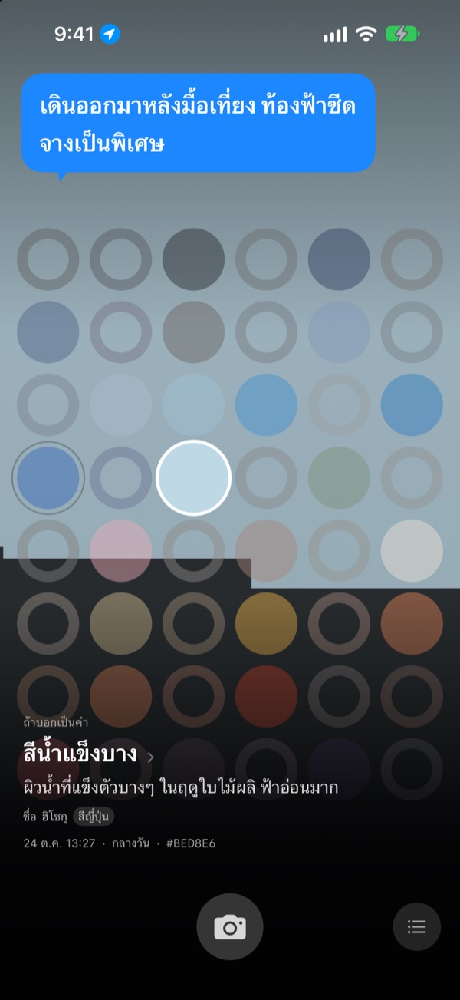
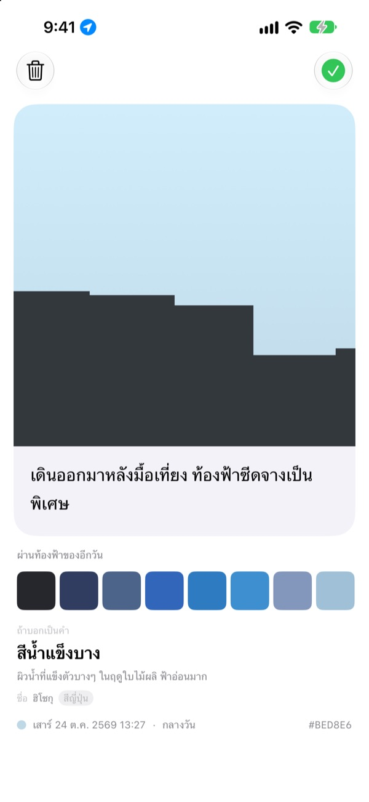
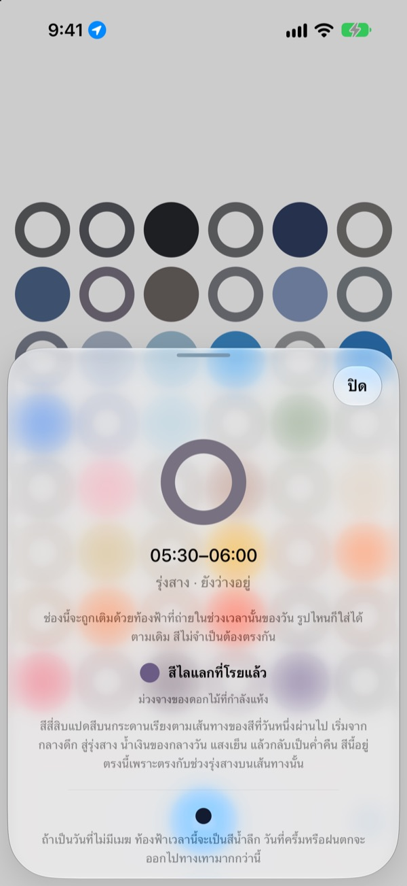
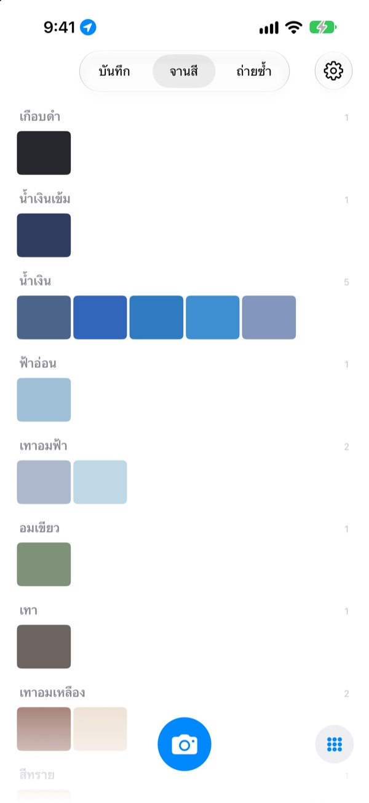

ท้องฟ้าวันนี้
เป็นสีอะไร
ถ่ายท้องฟ้าหนึ่งภาพ ช่องของเวลานั้นบนกระดานสี่สิบแปดช่องจะถูกเติมด้วยสีที่คุณถ่ายได้ และได้ชื่อที่คล้ายสีนั้น เช่น สีน้ำแข็งบาง สีกระเบื้องสระว่ายน้ำ หรือสีลูกพลับสุก
ฟรี ไม่ต้องมีบัญชี ไม่ต้องลงชื่อเข้าใช้

ลองแตะกระดานดู
แตะช่องเพื่อดูว่าเป็นท้องฟ้าช่วงไหนของวัน ใส่ภาพท้องฟ้าเพื่อเติมช่องของเวลาตอนนี้ แล้วเลื่อนวันไปข้างหน้าเพื่อดูว่ากระดานเปลี่ยนไปอย่างไร
เราเห็นท้องฟ้าทุกวัน แต่จำสีไม่ได้สักสี
ท้องฟ้าที่เงยมองระหว่างทางไปทำงาน ท้องฟ้าตอนเดินออกมาหลังมื้อกลางวัน พอถึงตอนเย็นก็นึกไม่ออกแล้วว่าเป็นสีอะไร ภาพท้องฟ้าที่ถ่ายไว้ก็จมหายไปในคลังรูปภาพ SkyDex เก็บภาพท้องฟ้าเป็นสี แล้ววางเส้นทางที่ท้องฟ้าวันนี้ผ่านมาไว้บนกระดานเดียว
ท้องฟ้าทุกผืนมีชื่อ
สีที่ถ่ายได้จะได้ชื่อที่นึกภาพออกก่อน เช่น สีน้ำแข็งบาง สีกระเบื้องสระว่ายน้ำ หรือสีลูกพลับสุก ด้านล่างตามด้วยชื่อที่มีที่มา จากสีเกาหลี สีญี่ปุ่น สีพิกเมนต์ หรือสีมาตรฐาน
ถ้าใกล้พอจะขึ้นว่า “ชื่อ” ถ้ายังห่างก็บอกตรง ๆ ว่า “ชื่อที่ใกล้ที่สุด”

เขียนไว้สักบรรทัด
ถ่ายเสร็จ การ์ดจะเปิดขึ้นทันที เขียนสิ่งที่คิดตอนมองท้องฟ้านั้นไว้หนึ่งบรรทัด แล้วเมื่อแตะช่องนั้นบนกระดาน ข้อความจะลอยขึ้นเหนือท้องฟ้าอีกครั้ง
คุณยังนำสีของท้องฟ้าที่เก็บไว้ในวันอื่นมาแต่งลงบนท้องฟ้าในภาพนี้ แล้วแชร์เป็นรูปได้ด้วย

ช่องว่างช่วยนำทาง
แตะช่องว่างเพื่อดูว่าช่องนั้นเป็นช่วงไหนของวัน และควรมองหาสีอะไร ถ้าเป็นวันที่ไม่มีเมฆ แอปจะบอกด้วยว่าท้องฟ้าเวลานี้เป็นสีอะไร โดยอิงเวลาพระอาทิตย์ขึ้นและตกตรงที่คุณอยู่
สีไม่จำเป็นต้องตรง สีเทาของวันฟ้าครึ้มก็คือสีท้องฟ้าของวันนั้นเหมือนกัน

บันทึก จานสี ถ่ายซ้ำ
ดูท้องฟ้าที่ถ่ายไว้ตามลำดับเวลา และรวมสีที่สะสมเป็นจานสีตามกลุ่ม เช่น น้ำเงิน เทา และสีทราย ถ้าถ่ายท้องฟ้าเวลาเดิมในอีกวัน สองภาพจะเรียงอยู่เคียงกัน
วิดเจ็ตบนหน้าจอโฮมแสดงกระดานวันนี้และท้องฟ้าวันนี้ให้เห็นได้ทันที

เริ่มได้ในสามขั้นตอน
- 1
เงยหน้ามองท้องฟ้า
แตะปุ่มกล้องใต้กระดาน แล้วถ่ายให้ท้องฟ้าเต็มกรอบสี่เหลี่ยมจัตุรัส
- 2
ช่องถูกเติม
ช่องของเวลาตอนนี้จะถูกเติมด้วยสีที่ถ่ายได้ พร้อมชื่อ
- 3
เขียนไว้หนึ่งบรรทัด
เขียนสิ่งที่คิดตอนมองท้องฟ้านั้นลงในการ์ดที่เปิดขึ้น
กระดานแบ่งหนึ่งวันแบบนี้
- กลางดึก · 00:00–05:00
- 6 ช่อง
- รุ่งสาง · 05:00–08:00
- 6 ช่อง
- กลางวัน · 08:00–16:00
- 12 ช่อง
- บ่ายแก่ · 16:00–18:00
- 6 ช่อง
- แสงเย็น · 18:00–21:00
- 12 ช่อง ช่องละ 15 นาที
- ค่ำคืน · 21:00–24:00
- 6 ช่อง
ช่วงแสงเย็นที่ท้องฟ้าเปลี่ยนเร็ว ช่องจะถี่ ส่วนกลางดึกที่ท้องฟ้าแทบไม่เปลี่ยน ช่องจะกว้าง บนสุดคือกลางดึก และยิ่งลงมาข้างล่าง วันก็ยิ่งผ่านไป
คำถามที่พบบ่อย
ช่องถูกเติมอย่างไร
ท้องฟ้าที่ถ่ายวันนี้จะเติมช่องของเวลาที่ถ่าย แม้สีจะไม่ตรงกับที่คาดไว้ก็ใส่ลงไปตามนั้น เพราะท้องฟ้าเวลานั้นเป็นอย่างนั้นจริง ๆ ส่วนท้องฟ้าที่เก็บไว้ก่อนหน้าจะเข้าตามสี ถ้าใกล้กับสีของช่องไหนมากพอก็จะเติมช่องนั้น และท้องฟ้าหนึ่งภาพเติมได้เพียงหนึ่งช่อง
ช่องที่เต็มเมื่อวาน วันนี้กลับว่าง
กระดานคือวันนี้ ช่องที่ท้องฟ้าของเมื่อวานเติมไว้ตามเวลา พอขึ้นวันใหม่จะถูกจับคู่ใหม่ด้วยสีเพียงอย่างเดียว บางวันกระดานจึงเกือบเต็ม บางวันก็ดูว่างเปล่า ภาพไม่ได้หายไปไหน ท้องฟ้าที่สะสมไว้ยังอยู่ครบในบันทึก และเรียงตามสีในจานสี
ช่องที่เติมแล้วค่อย ๆ จางลง
ตั้งใจให้เป็นแบบนั้น ภาพจะคงสีเดิมไว้หนึ่งสัปดาห์ จากนั้นค่อย ๆ จางลงตลอดแปดสัปดาห์ถัดไป ภาพไม่ได้ถูกลบ และไม่จางจนหายไปหมด ถ้าถ่ายท้องฟ้าช่วงเวลานั้นอีกครั้ง ช่องจะกลับมาเป็นสีเดิมทันที ไม่มีสถิติต่อเนื่องที่ขาดตอน และไม่มีตัวเลขที่ต้องไล่เก็บคืน
สีต้องตรงไหม
ไม่ต้อง ไม่มีการตัดสินว่าผ่านหรือไม่ผ่าน ภาพที่ถ่ายจะถูกบันทึกเสมอ และสีเทาของวันฟ้าครึ้มก็คือสีท้องฟ้าของวันนั้น
ทำไมแอปถึงขอตำแหน่ง
ใช้เพียงเพื่อบอกสีท้องฟ้าของวันที่ไม่มีเมฆ ณ เวลานั้น เมื่อคุณแตะช่องว่าง โดยอิงเวลาพระอาทิตย์ขึ้นและตกตรงที่คุณอยู่ ใช้แค่ตำแหน่งคร่าว ๆ ระดับกิโลเมตร และไม่แนบพิกัดไปกับภาพ ถ้าไม่อนุญาต แอปก็ยังใช้ได้ตามปกติ โดยใช้กรุงโซลเป็นเกณฑ์
ใส่ท้องฟ้าจากคลังรูปภาพได้ไหม
ได้ ท้องฟ้าที่เลือกจากแอปรูปภาพแทนกล้องจะถูกครอบเป็นสี่เหลี่ยมจัตุรัสเช่นกัน และเติมช่องของเวลาตอนนี้เหมือนท้องฟ้าที่เพิ่งถ่าย
ลบภาพได้อย่างไร
เปิดภาพแล้วแตะ “ลบ” หรือปัดไปทางซ้ายในบันทึก ภาพจะถูกลบทั้งจากอุปกรณ์และ iCloud พร้อมกัน ถ้าลบแอป สำเนาใน iCloud ยังอยู่ เมื่อติดตั้งใหม่ ท้องฟ้าที่สะสมไว้ก็จะกลับมา
ถ้าเปลี่ยนเครื่อง ท้องฟ้าที่สะสมไว้จะเป็นอย่างไร
ท้องฟ้าที่สะสมไว้เก็บอยู่ใน iCloud ของคุณเอง จึงใช้ต่อได้บนเครื่องใหม่ที่ลงชื่อเข้าใช้ด้วยบัญชี Apple เดียวกัน ไม่มีบัญชีของแอป ไม่มีเซิร์ฟเวอร์ ภาพและสีไม่ถูกส่งไปให้นักพัฒนา ไม่มีโฆษณา และไม่มีการติดตาม
ฟรีจริงไหม
จริง ทุกฟีเจอร์ใช้ได้ฟรี ถ้าชอบ คุณส่งทิปให้นักพัฒนาได้ในแอป แต่ทิปไม่ได้ปลดล็อกฟีเจอร์ใด ๆ
ใช้กับอุปกรณ์ใดได้บ้าง
iPhone ที่ใช้ iOS 17.0 ขึ้นไป แสดงผลแนวตั้งเท่านั้น
หากพบข้อผิดพลาด การทำงานที่แปลกไป หรืออยากบอกอะไร ส่งอีเมลมาที่ leeo@kakao.com ได้เลย ถ้าเล่าด้วยว่าเกิดขึ้นตอนไหนและใช้ iOS เวอร์ชันอะไร จะช่วยให้หาสาเหตุได้ง่ายขึ้นมาก